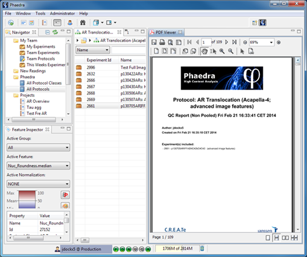
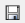

The PDF Viewer shows a report after it has been generated using the Report Wizard.
From here, you can view the PDF report, print it, or save it to a PDF file on your computer.

The primary buttons are:
| Print the PDF | |
|  |
Save the PDF to your desktop or network drive |
| Open the Utility Pane Here you can view the bookmarks, search through the document and view thumbnails of all the pages in the PDF. |